BOGOSORGAMES / プレスキット
NyctoType
速度と戦術で競い合うマルチスレッドタイピングバトル
更新日
ゲーム紹介
NyctoTypeは、タイピング課題をクリアして盤面上のコマを動かしたり、新たなコマを生成したりする戦略性タイピングゲームです。入力の速さだけでなく、どのコマをどの順で動かすかという判断が勝敗を左右します。
目指していること
NyctoTypeを通じて、タイピングゲームというジャンルそのものを、より多くの人が遊び、観戦し、参加するeスポーツへ育てることを目指しています。
基本ルール
自分のコマと移動方向を選び、提示された文字列を入力すると、コマを1手動かせます。新しいコマもコンソールで選び、タイピング課題をクリアして生成します。相手側の端から盤外へコマを落とすとダメージを与えられ、先に相手の体力を削り切った方が勝利です。
特徴
コマごとのアビリティ
コマごとに移動コスト、生成コスト、移動方向、アビリティが異なります。相手のコマを破壊する、押し出す、ダメージを増やすなどの効果を踏まえて行動を選びます。
盤面全体を見渡す一人称視点
テーブルを挟んで相手と向かい合い、ボードゲームを遊ぶような視点で戦います。盤面全体を見渡しながら、攻める場所と守る場所を考えます。
表示言語と入力言語を個別に設定（予定）
インターフェイスの表示言語と、タイピング課題の入力言語は、それぞれ別に設定できるようにする予定です。
製品版に向けた開発予定
戦闘やイベントのあるマップを進み、コマの獲得・強化でデッキを育てながらボスの攻略を目指す、ローグライト要素を含むストーリーモードを開発予定です。ここで紹介する製品版向けの予定は、個別にお渡しするデモの収録内容を示すものではありません。
スクリーンショット
開発中の実ゲーム画面です。収録ビルドや今後の開発により表示が変わる場合があります。日本語UI版と英語UI版を掲載しています。
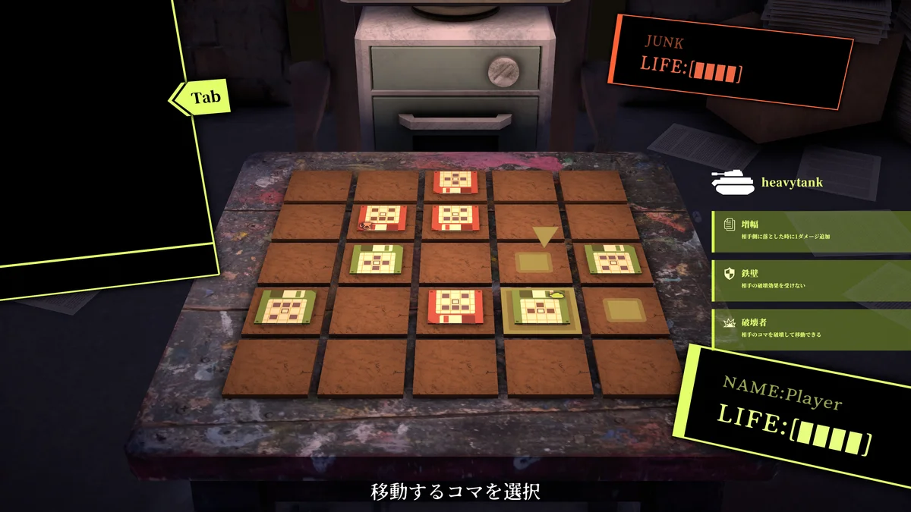
盤面とコマの移動先選択（日本語UI）
原寸PNGをダウンロード{kind=link}
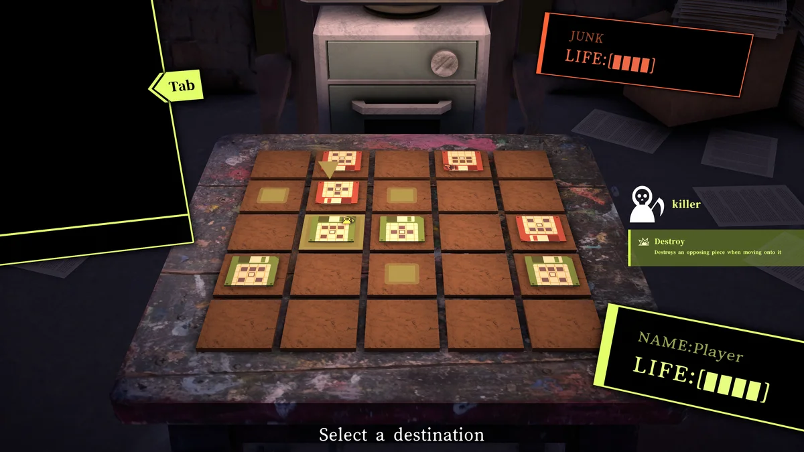
盤面とコマの移動先選択（英語UI）
原寸PNGをダウンロード{kind=link}
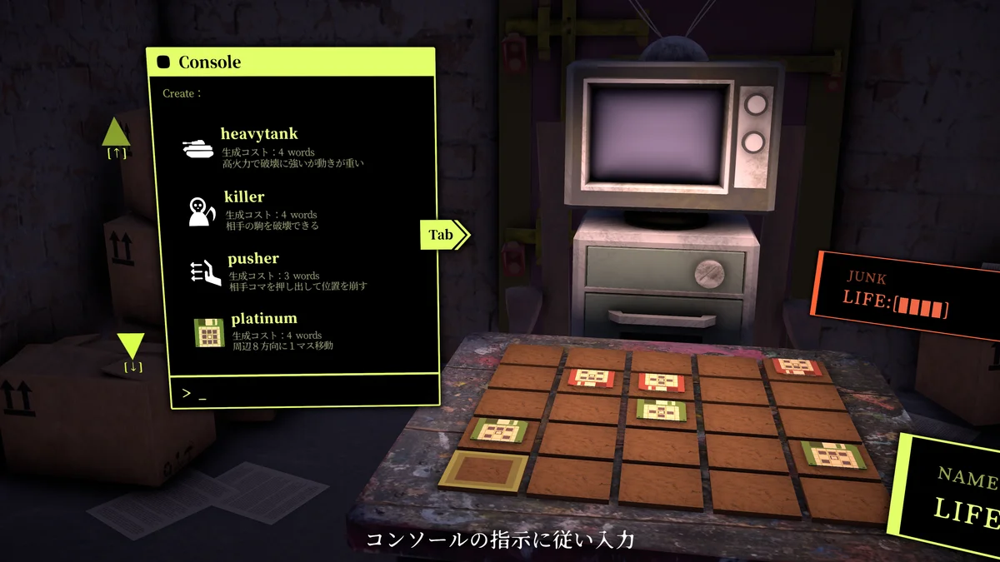
コンソールで生成するコマを選択（日本語UI）
原寸PNGをダウンロード{kind=link}
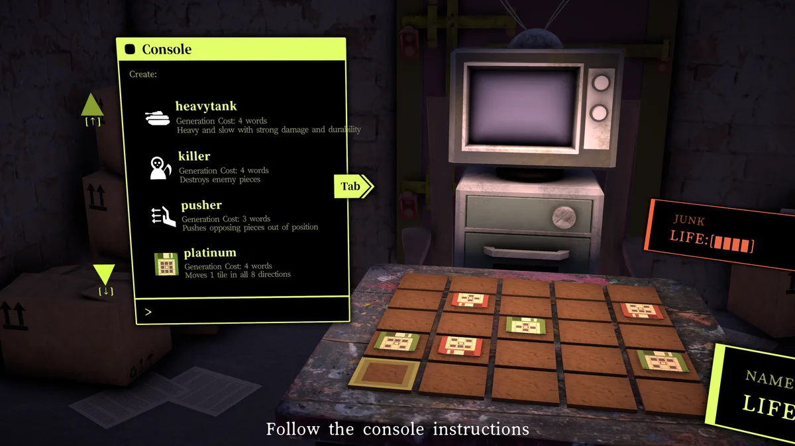
コンソールで生成するコマを選択（英語UI）
原寸PNGをダウンロード{kind=link}
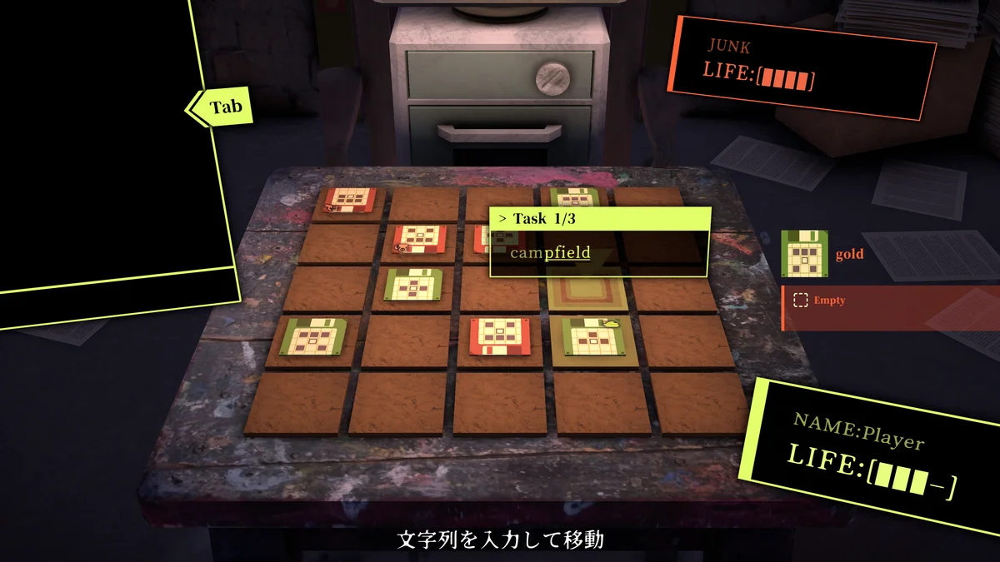
タイピング課題をクリアしてコマを移動（日本語UI）
原寸PNGをダウンロード{kind=link}
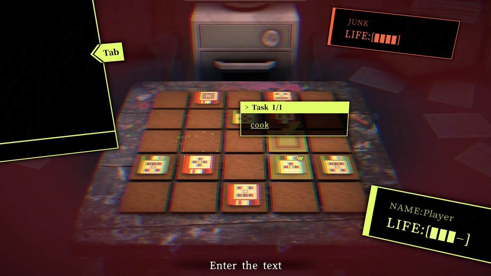
タイピング課題をクリアしてコマを移動（英語UI）
原寸PNGをダウンロード{kind=link}
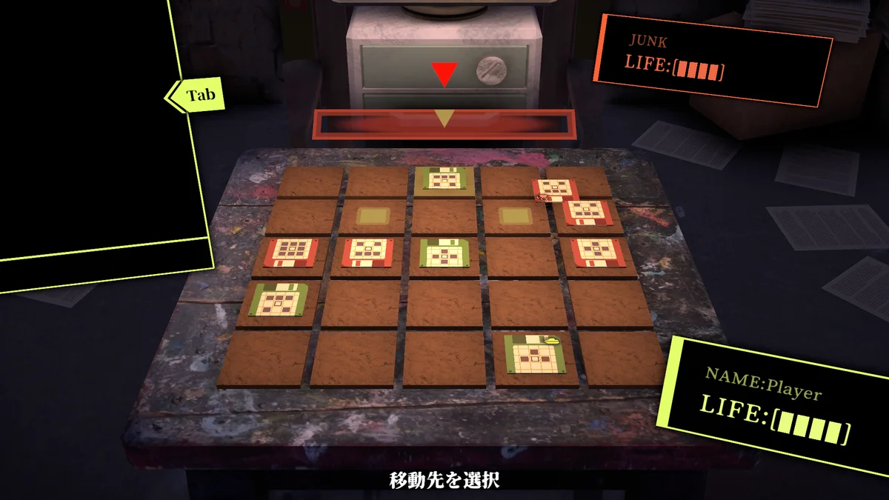
相手側の盤外に落とすことでダメージを与える（日本語UI）
原寸PNGをダウンロード{kind=link}
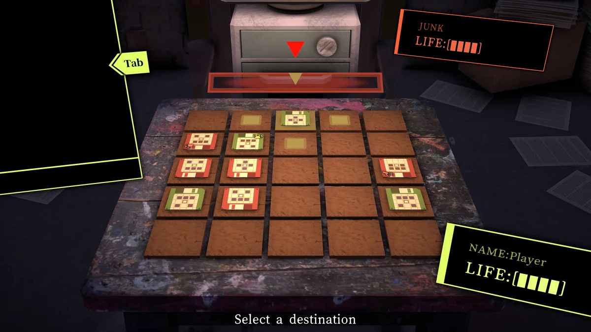
相手側の盤外に落とすことでダメージを与える（英語UI）
原寸PNGをダウンロード{kind=link}
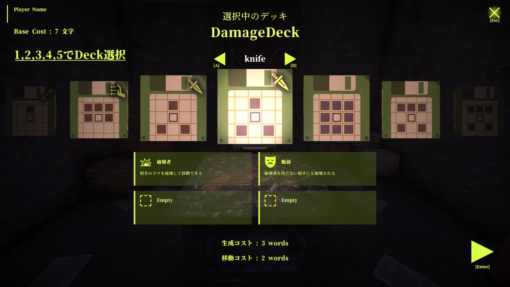
特殊なアビリティを持つコマ（日本語UI）
原寸PNGをダウンロード{kind=link}
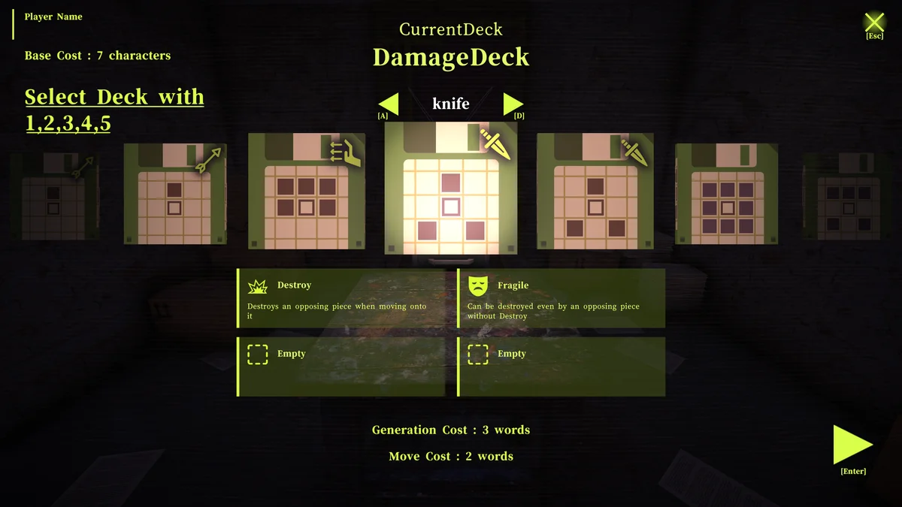
特殊なアビリティを持つコマ（英語UI）
原寸PNGをダウンロード{kind=link}
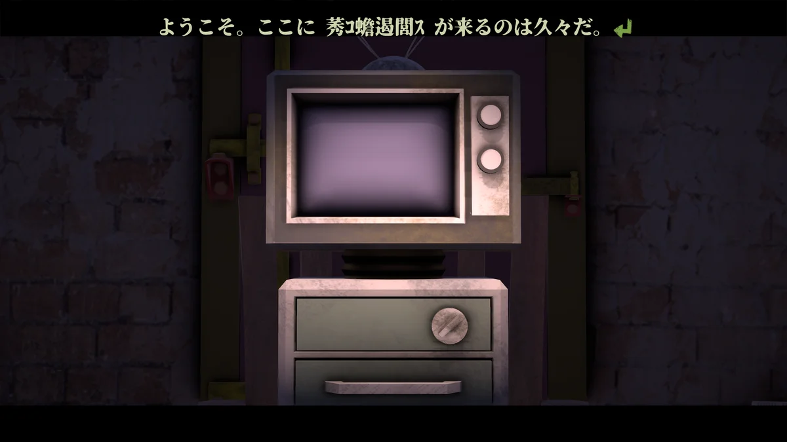
ストーリー会話画面（日本語UI）
原寸PNGをダウンロード{kind=link}
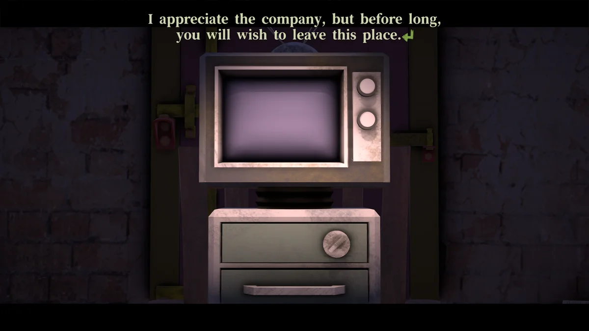
ストーリー会話画面（英語UI）
原寸PNGをダウンロード{kind=link}
ロゴ・キーアート
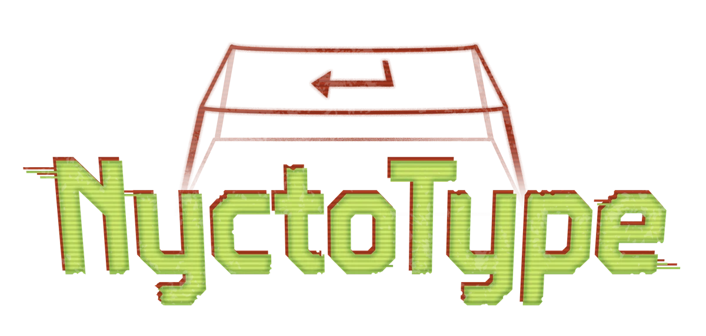
タイトルロゴ（透過PNG）
原寸PNGをダウンロード{kind=link}
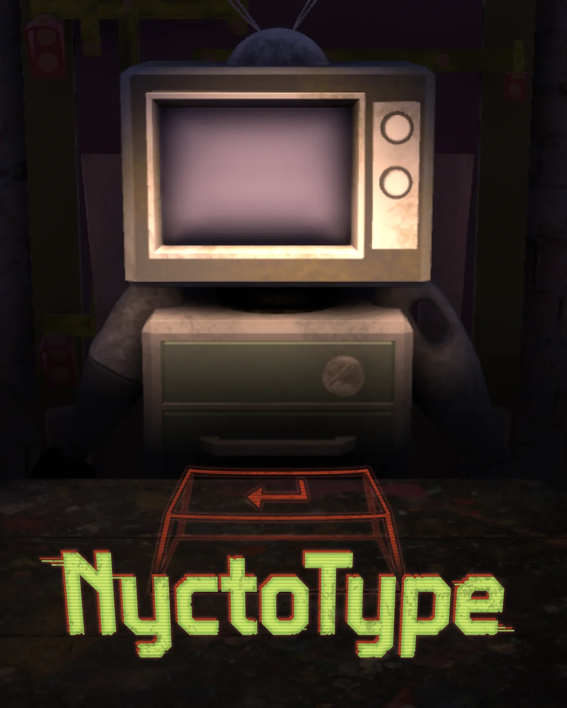
縦型キーアート（ロゴ入り）
原寸PNGをダウンロード{kind=link}
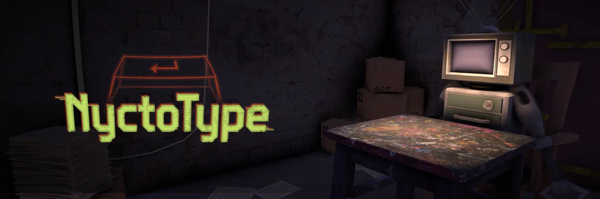
横長キーアート（ロゴ入り）
原寸PNGをダウンロード{kind=link}
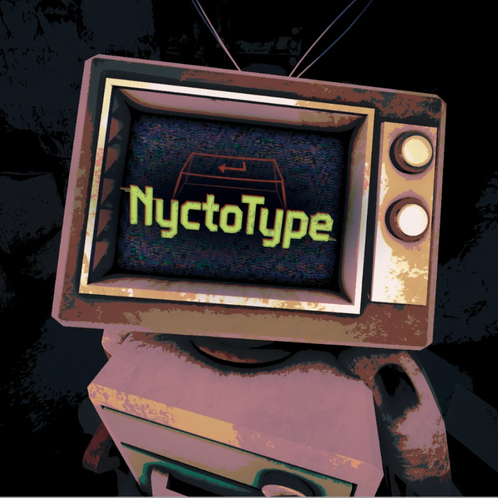
正方形キーアート（ロゴ入り）
原寸PNGをダウンロード{kind=link}
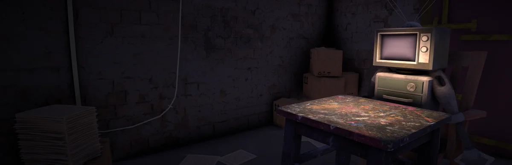
横長キーアート（ロゴなし）
原寸PNGをダウンロード{kind=link}
素材ダウンロード
日本語版と英語版の素材ZIPを分けています。各ZIPに対応言語の実機スクリーンショット6枚、ロゴ、キーアート4点、紹介・基本情報・利用案内テキストを収録しています。
配信・素材利用について
NyctoTypeの配信・録画・動画公開を歓迎します。紹介用デモの受け取り後、すぐに公開していただけます。広告や投げ銭を伴う動画・配信も可能です。
このプレスキットの画像は、NyctoTypeを紹介する記事・動画・配信にご利用いただけます。スクリーンショットとキーアートは、リサイズ・トリミング・文字入れが可能です。ロゴは縦横比を保った拡大縮小のみ可能で、デザインの改変はご遠慮ください。
記事や動画の概要欄などに、可能であれば「NyctoType / BogosorGames」のクレジットとSteamページへのリンクを掲載いただけると幸いです。必須ではありません。
NyctoType / BogosorGames
https://store.steampowered.com/app/3968600/NyctoType/
お問い合わせ
取材・紹介用デモ・素材についてのお問い合わせは、BogosorGamesまでご連絡ください。
BogosorGames
electro.peaceful.oooo[at]gmail.com